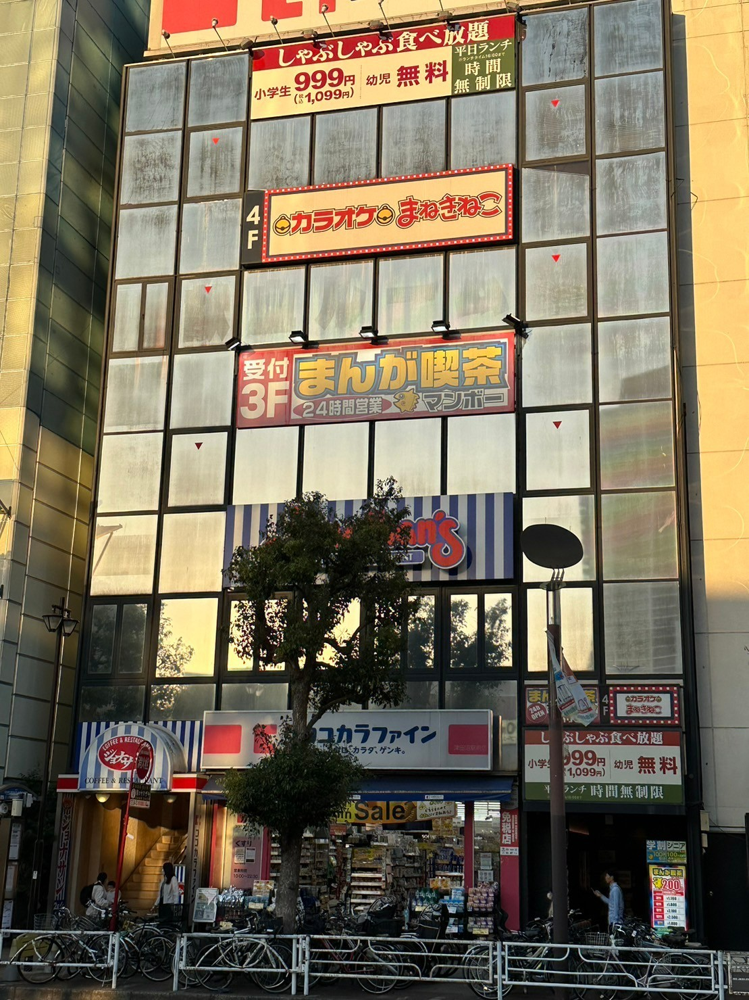
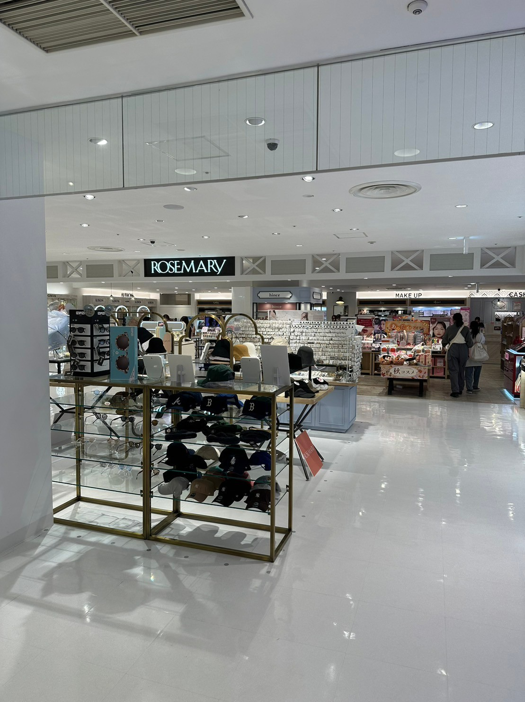
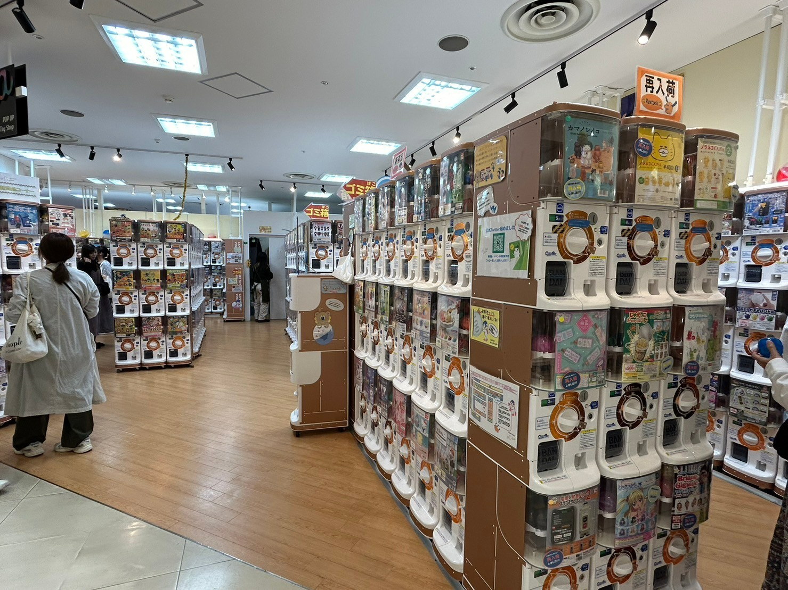
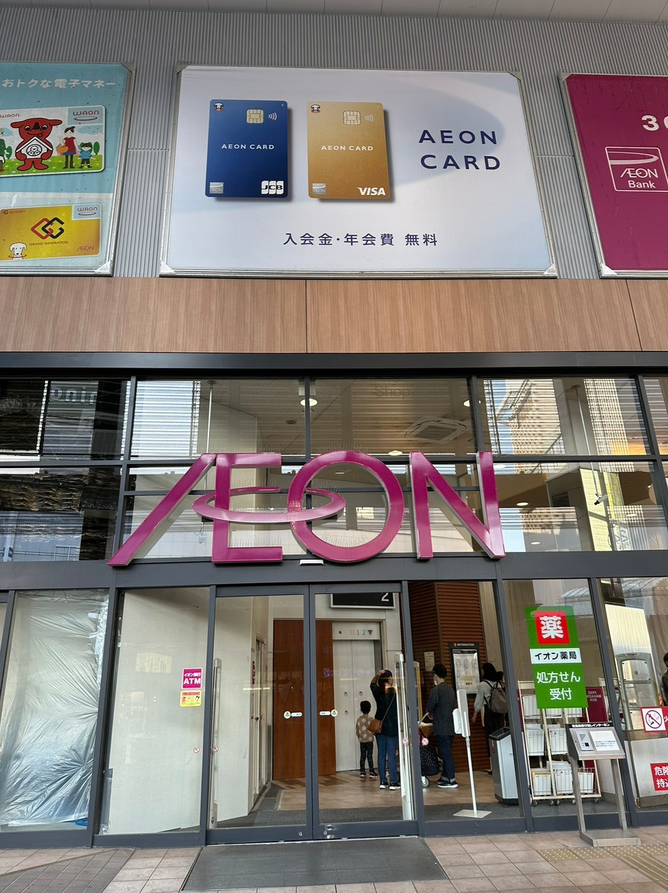

JR津田沼駅北口徒歩6分
営業時間：24時間営業
学割が使えるため昼間から安く利用することができます。また、ドリンクバーを頼めば持ち込みありのルーム料金無料で利用することができます。

JR津田沼駅北口徒歩2分
営業時間：10:00~20:00
駅に直結していて行きやすい！
たくさんの店舗が入っておりショッピング好きなカップルにはおすすめ。

JR津田沼駅南口徒歩3分
営業時間：10:00~21:00
コンサートホールが隣接しているためついでの暇つぶしに最適。また、イベントが行われるので楽しむことができます。

京成津田沼駅徒歩2分
営業時間：10:00~22:00
オリジナルブランドが多くあるのが人気な理由の一つ。ゲームセンターがあるので放課後デートにおすすめです。